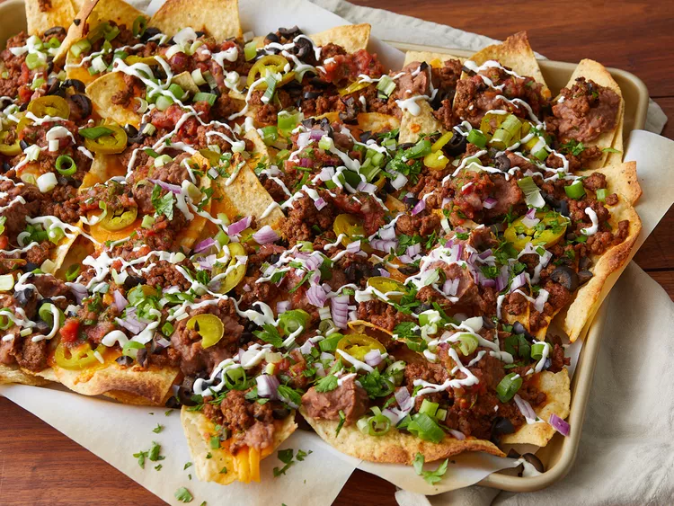

Super Nachos

Decription:
These homemade nachos are great for game day. This recipe makes a huge meal-sized tray of nachos loaded with taco-seasoned ground beef, refried beans, salsa, jalapeños, and cheese.
Ingredients:
- Nacho
- Cheese
- Green Onions
- Jalapeños
Steps:
- Spread the tortilla chips on a baking sheet.
- Top the chips with cheese, beans.
- Broil until the cheese is melted.
- Top with olives, salsa, sour cream, green onions, and jalapeños.
Home